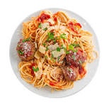

Home
Spaghetti Recipe

Descripition
Spaghetti is an awesome easy to prepare meal. god for breakfast, lunch or dinner depending on your family daily needs.
Ingredients
- spaghetti
- water
- tomatoes
- jollof spices
- maggi
- salt
- Groundnut oil
How to Prepare
Pasta brands cook at different times – you'll need to follow the pack instructions rather than using a generic timing.
- Bring a pan of water to the boil and season it with salt.
- Add the spaghetti and stir it gently until all the strands sink beneath the water level. Stir again to make sure they're not stuck together.
- Cook following the pack instructions but taking 2 mins off the time suggested.
- Check the pasta when the time is up by biting into a strand – it should be cooked through but still firm. Cook for a further 1-2 mins if you need to, or if you prefer your spaghetti softer.
- Drain, reserving a little pasta water to add to the sauce. Add the pasta to the sauce straight away so it doesn’t stick together as it cools.
- serve with your favourite sauce and chilled drink